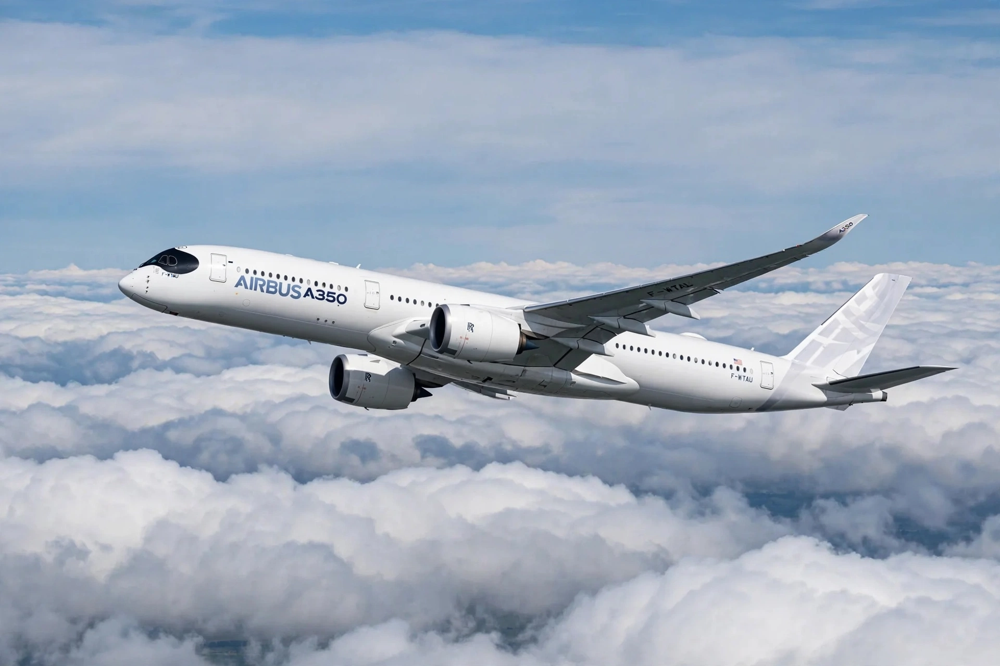

Airbus A350 XWB
From Wikipedia, the free encyclopedia
| Airbus A350 XWB | |
|---|---|
| Role | Wide-body airliner |
| Manufacturer | Airbus |
| First flight | 14 June 2013 |
| Introduction | 15 January 2015 with Qatar Airways |
| Variants | A350-900, A350-1000 |
| Engines | 2 × Rolls-Royce Trent XWB |
The Airbus A350 XWB (eXtra Wide Body) is a long-range, wide-body, twin-engine airliner developed by Airbus as the successor to the A330 and A340, competing principally with the Boeing 787 and 777.

An A350-900 in flightDevelopment
Launched in 2006 after airlines rejected an earlier A330-based proposal, the A350 XWB introduced a fuselage more than half made of carbon-fibre-reinforced polymer, new wings and efficient Rolls-Royce Trent XWB engines. The prototype first flew on 14 June 2013, and the A350-900 entered service with Qatar Airways on 15 January 2015.
Variants
- A350-900 — the base model, typically ~325 seats, range ~15,000 km
- A350-900ULR — ultra-long-range variant used by Singapore Airlines for the world's longest flights
- A350-1000 — stretched variant, ~369 seats, in service since 2018
- A350F — freighter variant
Features
The aircraft offers a wide cabin with high ceilings, large windows, high humidity and low cabin altitude for passenger comfort, and burn per seat roughly 25 % lower than the previous generation.